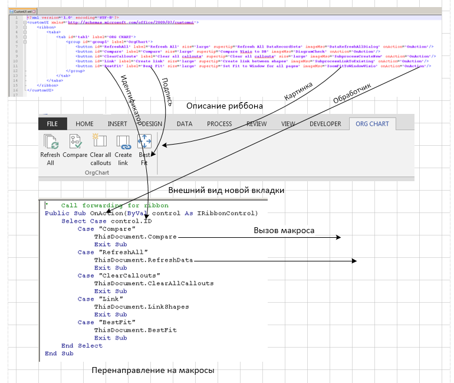

Эта статья не содержит открытий, а больше похожа на запись "для памяти". Чтобы, когда понадобится, можно было быстренько вспомнить и подключить к документу Visio риббон с пользовательской вкладкой.
Постановка задачи. Имеется документ с макросами; задача - добавить вызов макросов из риббона.
В районе 2007-2010 с появлением риббона было несколько публикаций на тему, как добавить к нему свою вкладку. Практически все они основывались на интерфейсе IRibbonExtensibility и подключении пользовательского риббона в момент открытия документа.
Однако с появлением в Visio 2013 нового (пакетного) формата файлов появилась возможность намертво связать пользовательский риббон с документом, просто навсегда включить его в состав документа. Получается простая и компактная конструкция, которой вполне достаточно, чтобы управлять несколькими макросами.
Итак, что нужно сделать для решения задачи.
- Создать файл CustomUI.xml - описание новых элементов риббона.
- Подобрать картинки для иконок (при желании).
- Создать обработчики, срабатывающие при нажатии кнопок риббона.
- Подключить риббон к документу.
Файл CustomUI.xml
Пример текста такого файла.
<?xml version="1.0" encoding="UTF-8"?>
<customUI xmlns="http://schemas.microsoft.com/office/2009/07/customui">
<ribbon>
<tabs>
<tab id="tab1" label="ORG CHART">
<group id="group1" label="OrgChart">
<button id="RefreshAll"
label="Refresh All"
size="large"
supertip="Refresh All DataRecordSets"
imageMso="DataRefreshAllDialog"
onAction="OnAction"/>
<button id="Compare"
label="Compare"
size="large"
supertip="Compare Visio to DB"
imageMso="DiagramCheck"
onAction="OnAction"/>
<button id="ClearCallouts"
label="Clear all callouts"
size="large"
supertip="Clear all callouts"
imageMso="SubprocessCreateNew"
onAction="OnAction"/>
<button id="Link"
label="Create link"
size="large"
supertip="Create link between shapes"
imageMso="SubprocessLinkToExisting"
onAction="OnAction"/>
<button id="BestFit"
label="Best Fit"
size="large"
supertip="Set Fit to Window for all pages"
imageMso="ZoomFitToWindowVisio"
onAction="OnAction"/>
</group>
</tab>
</tabs>
</ribbon>
</customUI>Здесь описана группа кнопок с минимумом необходимых атрибутов. Пять кнопок для вызова пяти макрсов.
Кнопки назначены большими. В качестве иконок на кнопках использованы иконки из imageMso.
Картинки для иконок
Картинки указываются в параметре imageMso, например imageMso="DataRefreshAllDialog".
В принципе, можно нарисовать свои картинки для иконок... Но проще использовать то, что уже имеется в составе офисных программ. Из такого множества имеющихся иконок всегда можно подобрать подходящие для имеющихся макросов.
Для подбора иконок удобно использовать перечни идентификаторов, собранные в https://github.com/OfficeDev/office-fluent-ui-command-identifiers . Там подборка сразу для нескольких офисов.
Перечни представляют собой Excel-файлы с именами типа VisioControls.xlsx.
Можно открыть соответствующее приложение, подсмотреть подходящие иконки, а затем, фильтруя по полям "Tab", "Tab Set" и "Control Type", выбрать соответствующий идентификатор из поля "Control Name". Именно значение этого поля прописывается в параметре imageMso.
Обработчики
Обработчики должны размещаться в модуле и принимать параметр "ByVal control As IRibbonControl".
В принципе, можно писать отдельный обработчик под каждую кнопку. А можно один общий, который будет выбирать идентификатор кнопки и вызывать соответствующий макрос.
Идентификатор - это то что описано в XML файле в атрибуте "id=", например <button id="RefreshAll"...
Вот пример такого обработчика переадресатора для приведенного выше XML описания риббона.
Public Sub OnAction(ByVal control As IRibbonControl)
Select Case control.ID
Case "Compare"
ThisDocument.Compare
Exit Sub
Case "RefreshAll"
ThisDocument.RefreshData
Exit Sub
Case "ClearCallouts"
ThisDocument.ClearAllCallouts
Exit Sub
Case "Link"
ThisDocument.LinkShapes
Exit Sub
Case "BestFit"
ThisDocument.BestFit
Exit Sub
End Select
End Sub
Подключение риббона к документу
По сути, для подключения риббона нужно вскрыть документ (в новом формате документ является архивом), добавить в него папку CustomUI с файлов CustomUI.xml внутри и ссылку на него в файле _rels типа
<Relationship Id="rUI1" Type="http://schemas.microsoft.com/office/2006/relationships/ui/extensibility" Target="customUI/customUI.xml"/>Примерно так и приходится поступать в некоторых приложениях, например в Excel, что слегка утомительно.
Visio в этом смысле радует. Здесь достаточно просто программно вписать текст XML файла в свойство CustomUI документа. Visio сам создаст папку, файл и ссылку.
Я написал для таких случаев VBS скрипт и использую его при возникновении необходимости подключения риббона.
Вот текст скрипта.
UIFile = "C:\Work\!RibTest\2\CustomUI.xml"
VisFile = "C:\Work\!RibTest\2\DrTest2.vsdm"
'
Set fso = CreateObject("Scripting.FileSystemObject")
Set file = fso.OpenTextFile(UIFile,1)
xml = file.ReadAll
file.Close
Set app = CreateObject("Visio.InvisibleApp")
Set doc = app.Documents.Open(VisFile)
doc.CustomUI = xml
doc.Save
app.Quit
В начале указаны две переменных (UIFile и VisFile), которые приходится править в каждом случае. Это путь к описанию интерфейса и файлу, к которому его нужно подключить.
Иллюстрация процесса "зарядки" файла риббоном с помощью VBS скрипта показана на титульной картинке.
А связи между компонентами при работе показаны ниже.

Другие применения - скрыть вкладку
С добавлением вкладок и кнопок вроде бы разобрались. Но есть и еще интересное применения данного подхода.
Известно, что существует возможность ручной настройки риббона, позволяющая в том числе скрыть какие-либо кнопки. Но эта настройка действует не на отдельный документ, а на все приложение в целом.
В XML файле риббона тоже можно назначить какие-то вкладки или кнопи невидимыми. Это уже можно применить к отдельному документу. Но при подключении риббона обычным, более распространенным способом либо будет задействован Add-In, который можно отключить, либо Visio документ обязан поддерживать макросы.
Так вот описанный выше способ свободен от таких недостатков. Во-первых, риббон подключается строго к указанному документу и только к нему. Во-вторых это может быть файл .vsdx, то есть без макросов. То есть разработчик получает возможность удалить из риббона мешающие ему штатные органы управления вообще или заменить их своими. А такая потребность время от времени возникает, как миниимум в форумах вопросы на эту тему встречаются.
Как это делается? XML описание риббона ведь не обязано содержать новые элементы. А если их не будет, то и исполняющая часть не нужна. То есть если в приведенном выше примере вместо <tab id="tab1"... вставить вот такую запись для штатной вкладки Viev
<tab idMso="TabView" visible="false">
</tab>
то после подключения риббона мы не увидим вкладку View в интерфейсе.